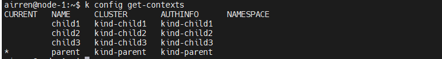
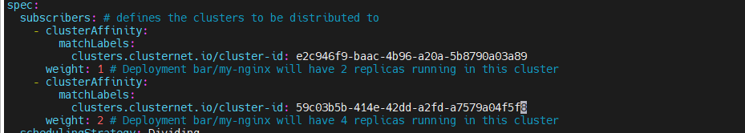
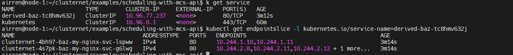

Airren Ren
Monday, January 1, 1
clusternet
Cluster Net
Test Environment Access method
1# this machine is out of intel, please use the socks proxy:
2# proxy-prc.intel.com:1080
3# use this private key to access this the relay machine:
4# first login to
5ssh -p 3302 airren@124.223.99.93 # passwd: 123-
6# next login to
7ssh airren@node-1 # passwd:123-
PreRequisites
Kind
Create cluster
1# create cluster one node
2
3
4# create cluster multinode
5
6# create cluster with configuration
Delete cluster
1kind delete cluster --name=<clustername>
Setup mcs-api demo
-
Re-setup 4 cluster. This will create 4 K8s clusters by
Kind. parent, child1,child2,child3.1cd ~/clusternet/hack 2./local-running.sh 3 4export KUBECONFIG=${HOME}/.kube/clusternet.configAfter that, you will see 4 clusters’ contexts.

-
Check Clusters status

-
Deploy application to child-clusters by
kubectl clusternet.- Change the cluster id in subscription.yaml to what you want to be deployed.
1cd ~/clusternet/examples/scheduling-with-mcs-api/scheduling 2vi subscription.yaml
-
Deploy the applicaton(deployment, servcie, service-export) to the child-cluster
1cd ~/clusternet/examples/scheduling-with-mcs-api/ 2k clusternet apply -f scheduling/ -
Deploy the service import in the Parent-Cluster
1k apply -f service-import.yaml
-
Check the deploy result.
successfullycreated a service.and then, find the
endpointslicebind with this service

The service port name shoule be same with the endpoint slice Name.
Archtecture
Clusternet is a lightweight addon that consists of three components, clusternet-agent, clusternet-scheduler andclusternet-hub.
Clusternet-agent is responsible for:
- Auto-registering current cluster to parent cluster as a child cluster.
- Report heartbeats of current cluster, including kubernetes version, running platform,
health/readyz/livezstatus,etc; - setting up websocket connection that provides full-duplex communication channels over a single TCP connection to parent cluster.
Clusternet-scheduler is responsible for
- scheduling resources/feeds to marched child clusters based on
SchedulingStrategy.
Clusternet-hub is responsible for
-
approving cluster registration request and creating dedicated resources, suce as namespaces, servceaccounts and RBAC rules, for each child cluster;
-
Serving ad an aggregated apiserver(AA),which is used to provide shadow APIs and serve as a websocket server that maintain multiple active webscoket connections form child clusters;
-
providing Kubernetes-styled API to redirect/proxy/upgrade request to each child cluster.
-
coordinating and deploying applications to multiple clusters from a single set of APIs;
-
ClusterRegistrationRequest: This is cluster-agent created in parent-cluster for child-cluster.
1k get clsrr -
ManagedCluseter: clusternet-hub approved the clsrr and created this object
1k get mcls -A -
HelmChart: helm chart configuration
-
Subscription: the resource for the child cluster. with a Base Object in corresponding namespace
-
Localization and Globalization
-
Base
-
Description
MultiCluster API
ServiceExport
ServiceExport, used to specify which service should be exposed across all clusters in the clusterset. ServiceExport must be created in each cluster that the underlying Service reside in. Creation of a ServiceExport in a cluster will signify that Service with the same name and namespace as the export should be visible to other clusters in the clusterset.
ServiceImport
ServcieImport is introduced to act as the in-cluster representation of a multi-cluster service in each importing cluster. This is analogous to the traditional Service type in Kubernetes, Importing clusters will have a corresponding ServiceImport for each uniquely named Service that has been exported within the clusterset, referenced by namespaced name. ServiceImport resources will be managed by the MCS implementation’s mcs-controller.
Debug of Clusternet
Reference
https://github.com/clusternet/clusternet/tree/main/examples/scheduling-with-mcs-api
https://github.com/kubernetes/community/tree/master/sig-multicluster
1$env:HTTP_PROXY="proxy-prc.intel.com:913"
2$env:HTTPS_PROXY="proxy-prc.intel.com:913"